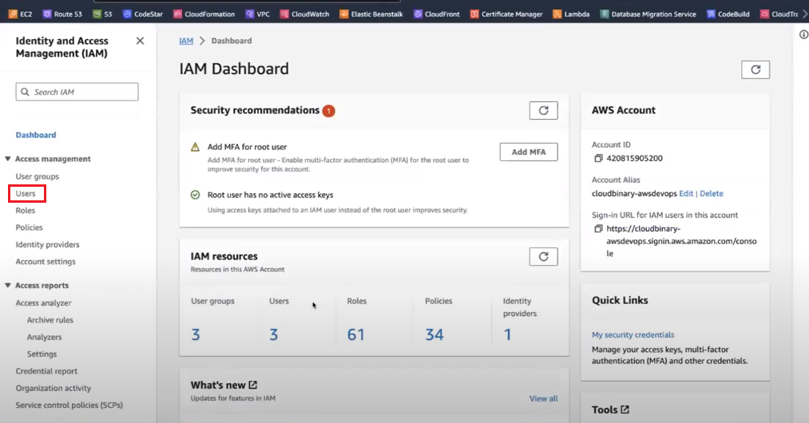
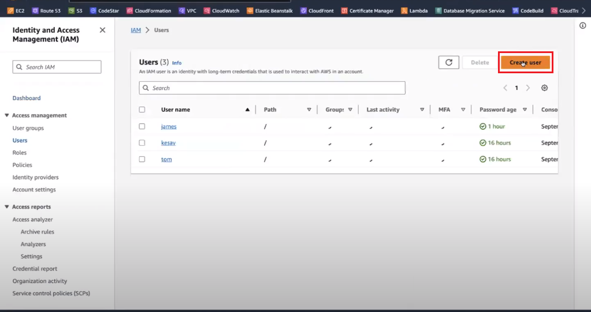
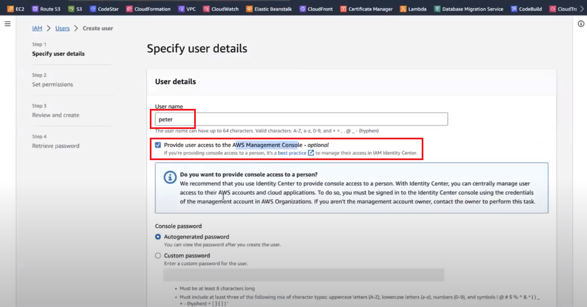
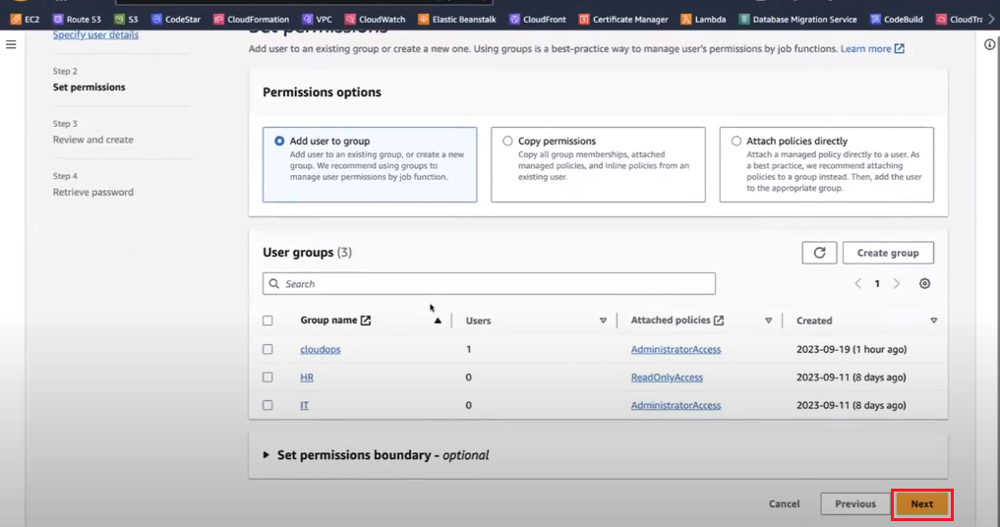
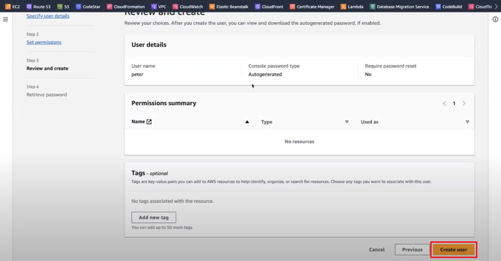

Step 1: Create IAM User
- Open the IAM Console and Navigate to "Users". 
- Click "Create user." 
- Enter a username and choose "Provide User access to Management console". 
- Choose a console password (Select AutoGenerated or Custom Password).
- Click "Next."
- Skip the permissions step (do not attach any policies). 
- Review and create the user. 


Note: This will create an IAM user without any attached policies, meaning the user has no permissions by default.